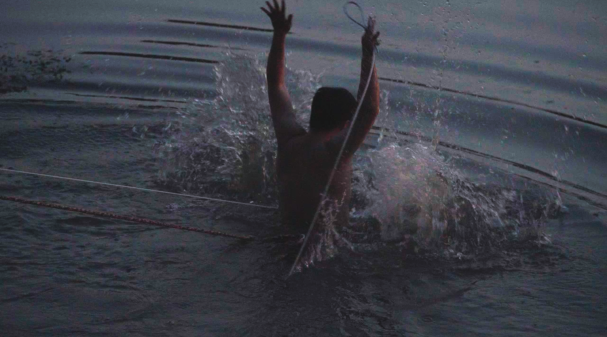
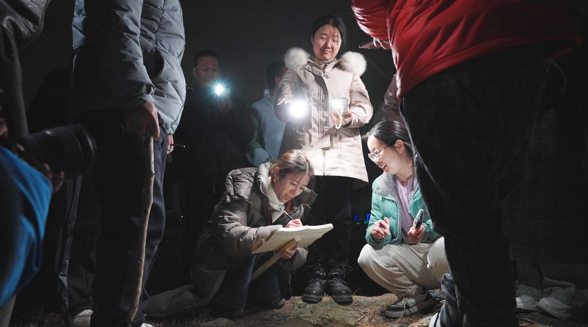
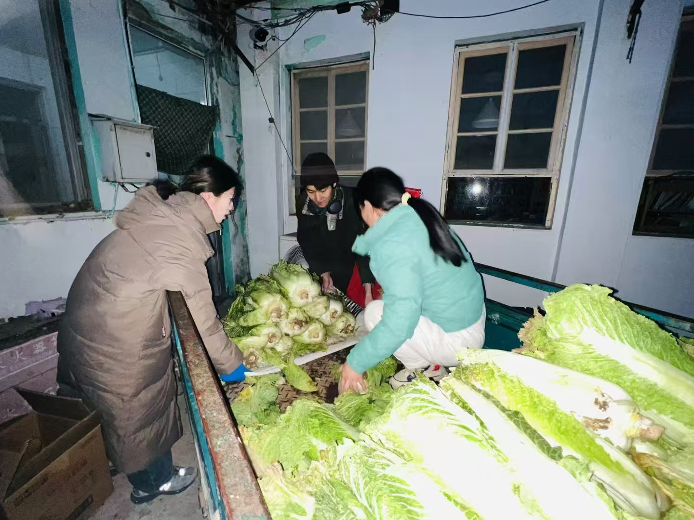
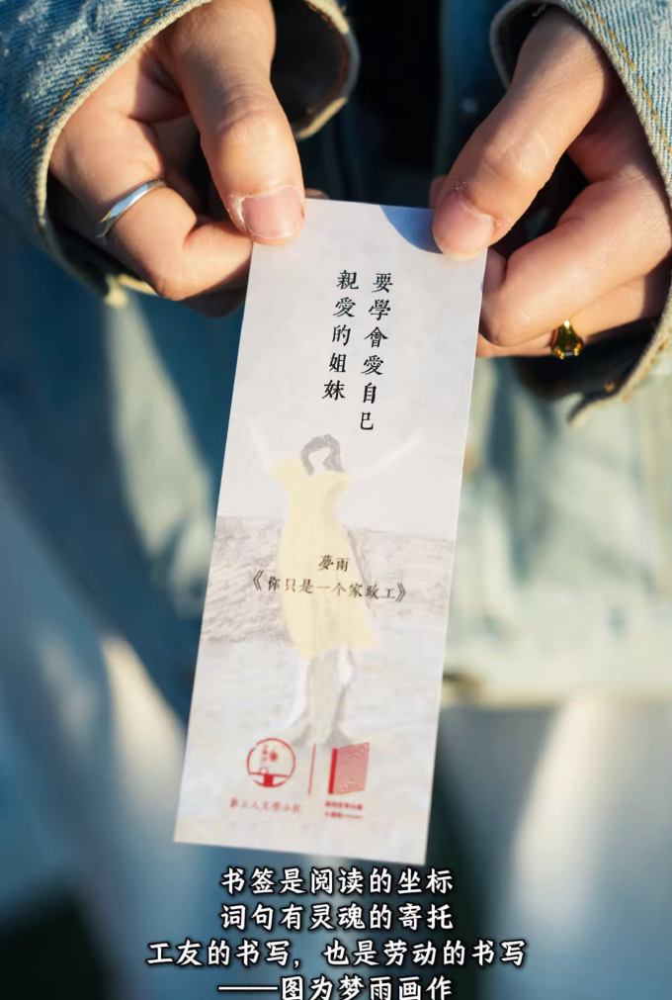
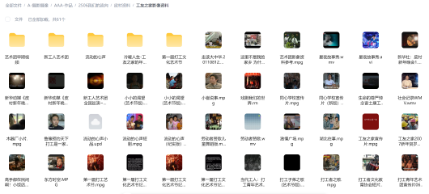
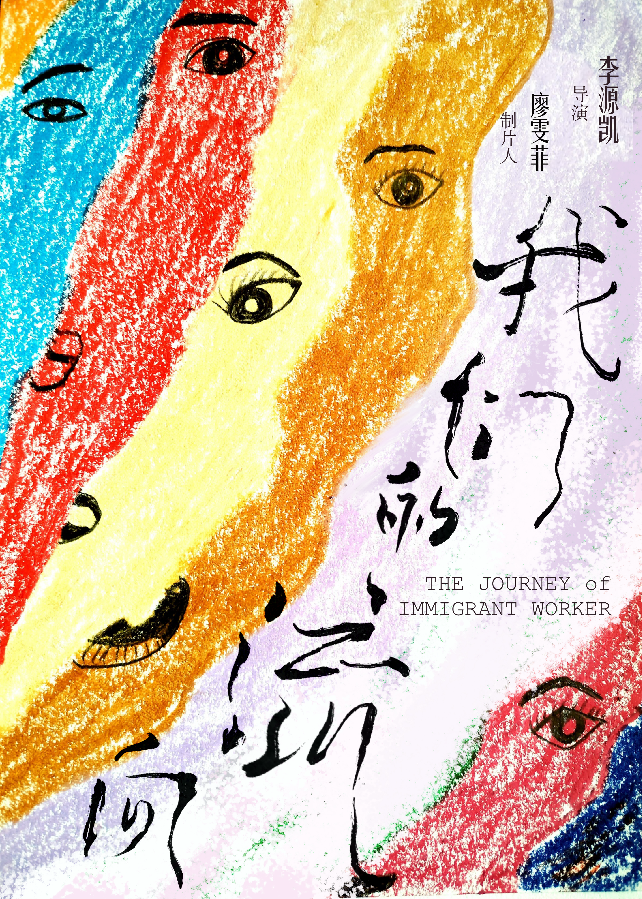

影视人类学作品集
李源凯
Visual Ethnography Portfolio
SCROLL
影视人类学作品集
Visual Ethnography Portfolio
李源凯，2002年生于四川广元。天津师范大学播音与主持艺术、世界史双学位，中央民族大学影视人类学硕士在读。六次跨民族田野调查，足迹遍及甘孜藏区、大理白族、北京皮村、大凉山彝区、青海同仁、大理南涧，累计产出41小时影像素材与数万字田野日志。
作品聚焦社会现实与人文关怀，以参与式观察深入城市边缘与民族社区，在流动与迁徙中记录生命的温度与文化的根系。入围中国纪录片学院奖、亚洲国际青年电影节最佳纪录短片提名，获西湖青年纪录片放映周最佳短纪录片。
Projects
纪录皮村文学小组在拆迁与搬迁中的最后半年，探索城市边缘群体的文化生产与身份建构。
民族志纪录片 · 120分钟抢救性记录川滇交界藏区独特的"可煞"新年吐槽会习俗，探讨仪式作为社会记忆载体的当代意义。
独立拍摄 · 民族志档案协助社工组织记录彝族社区文化传承与困境儿童关怀，探索影像赋权与社区发展的互动机制。
社区影像 · 协作出品追随县域中产的生存策略，以布尔迪厄资本理论框架呈现当代中国"悬浮"状态下的真实境遇。
最佳短纪录片 · 西湖青年纪录片放映周历时10-12个月完整记录北大校园四季生态，观察"社会-生态系统"中的现代共生实践。
生态纪录片 · 系列三集追踪民间陶艺人的制作技艺与文化传承，呈现"技艺-生活-信仰"的有机关联与当代转型。
工艺纪录片 · 清华美院合作
Beijing, Chaoyang District · New Workers' Literature Group
Since 2014, it has been holding weekly literature classes for workers in Picun Village every Saturday.
In 2023, due to demolition, they moved out of the original site of the museum and into the shared kitchen of Tongxin Experimental School.
Now, with the school's lease approaching its end, this will be our last half year in Picun Village.
The Journey of Immigrant Worker
2025年6月，北京皮村新工人文学小组将面临他们的第二次搬迁。影片以这场熟悉而紧迫的空间危机为线索，从杏树追忆、下河捞车、侧街找房等场景中纪录小组成员们历时半年的自我建构。
影片同时着眼时代变迁下"新工人"定义边界的扩张——它不再仅仅指向传统的农村户籍进城务工者，还包含如今那些失去原有社会位置、于城市边缘重新定位身份的人们。
"我们是矿工、家政工、泥瓦匠、育儿嫂、机械工人……也是用汗水、用厄运、用顽强、用永不低头的力量书写诗歌的人。"
《我们的流向》是皮村文学小组在2025年关键节点的影像记录，他们在流动中用文字书写小我历史，用文化证明自己正鲜活地存在。
预告片 · 新工人文学小组《相聚在皮村》十周年之歌
杏树下 · 我们的十年追忆活动
完整民族志影像（2小时）可邮件索取观影链接






皮村文学小组成立于2014年，十年间在打工博物馆原址生长。2023年博物馆拆迁后，迁入同心实验学校"共享厨房"继续授课。2025年6月，学校租期将至，他们将面临第二次搬迁。我进入时，他们正在临时空间与不确定的未来之间重建日常。
我并非隐形观察者。我拍摄文学小组周边产品——这是他们运营的重要收入来源；我组织历史音像整理留存——打捞即将消散的集体记忆；我协助策划"杏树下·我们的十年"追忆活动——在博物馆拆迁处依杏树席地而坐，夜色下朗诵诗歌，将写满期许的纸条埋入土中。镜头内外的身份不断切换，这让我意识到：影视人类学的"参与"不是干扰，而是另一种真实。
小海的三轮车意外坠江，他执意下水捞车。"我抱着沉车，就想到当年尼采抱着都灵之马那样，想哭。"这句话让我意识到：人们对于精神自由的执念与追求，如何在最狼狈的时刻闪现。当物理空间一再消逝，那些对文学的热忱与对理想的坚守，能否找到新的安放之处？
声音档案
"诗歌它对我，它不是娱乐，不是消遣，它是武器，让我开山劈路的……因为在车间，我真的不知道我是在创造价值还是制造垃圾，所以我那时候是每天都得写，哪怕写的不好，我要是一天没写觉得自己白活了。"
—— 小海，新工人诗人
"我穿过昨夜的城市，吐出那枚铁做的月亮……献给失业了半个月的四川小王、河南老李，献给因为工伤骨折的会拉二胡的安徽木匠刘师傅，献给工资税减后交不起房贷车贷年轻的打工人，献给一无所有一事无成的像我们这样的大龄失败者。"
—— 许多，谷仓乐队，《返乡青年》歌词
"露天电影往那一拉，大家就都出门了。孩子们在一起可以玩，大人可以陪着。那样才是真正的生活，鲜活的生活，有尊严的生活。"
—— 沈金花，同心学校校长
"我抱着沉车，就想到当年尼采抱着都灵之马那样，想哭。"
—— 小海，三轮车坠江后
如有合作意向或观影需求，欢迎邮件联系
elyk@foxmail.com
(+86) 153-9777-1680